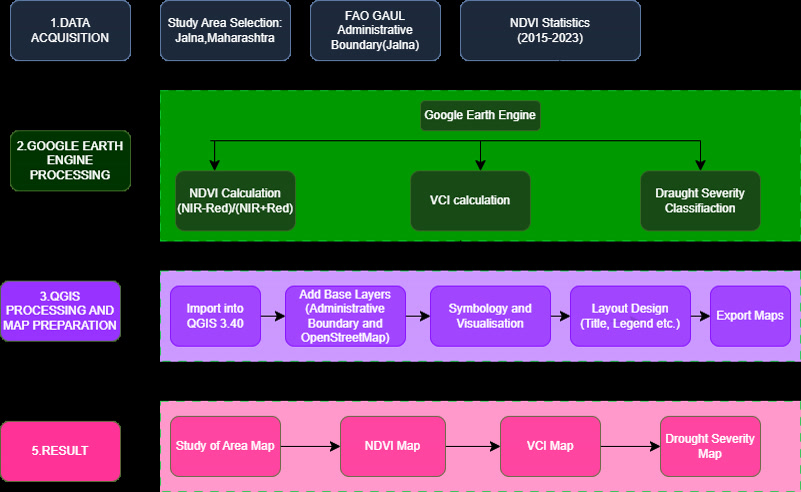
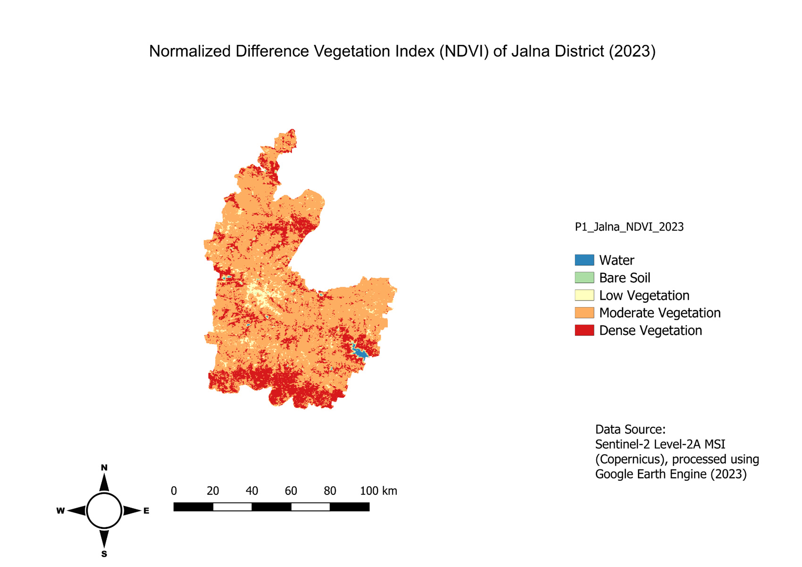
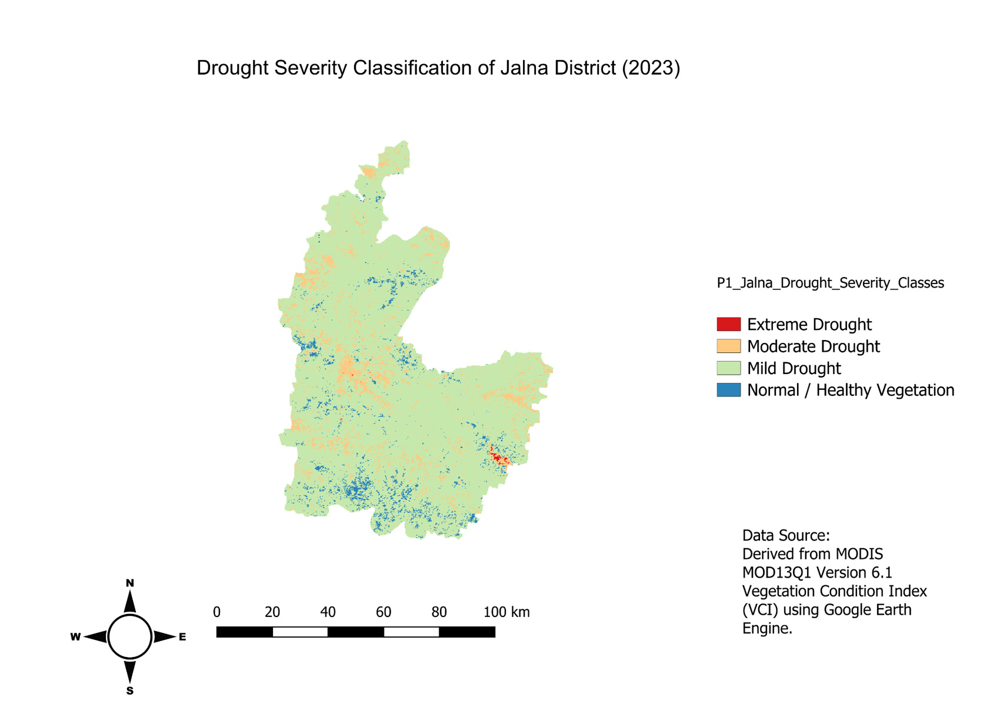
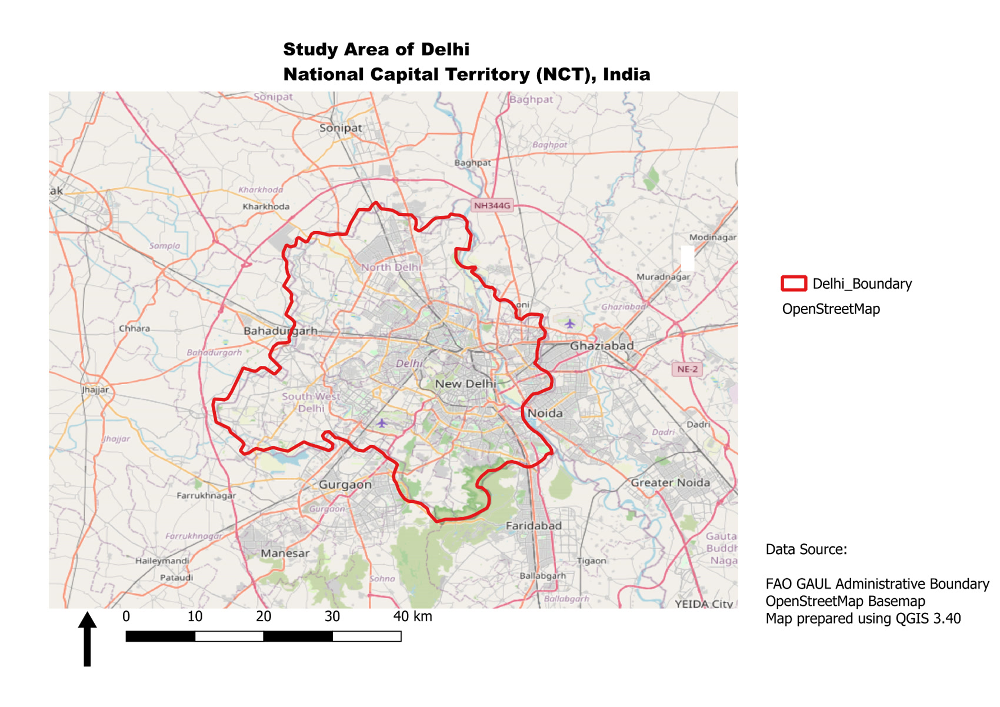
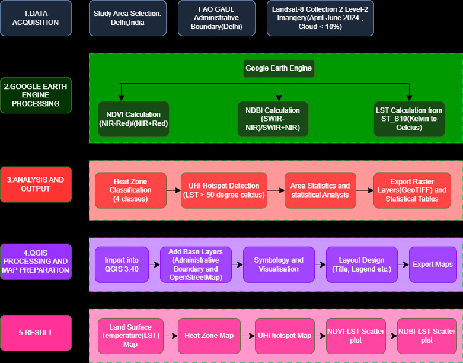
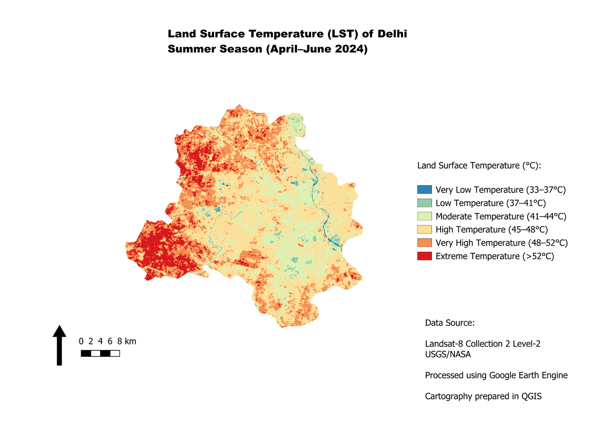
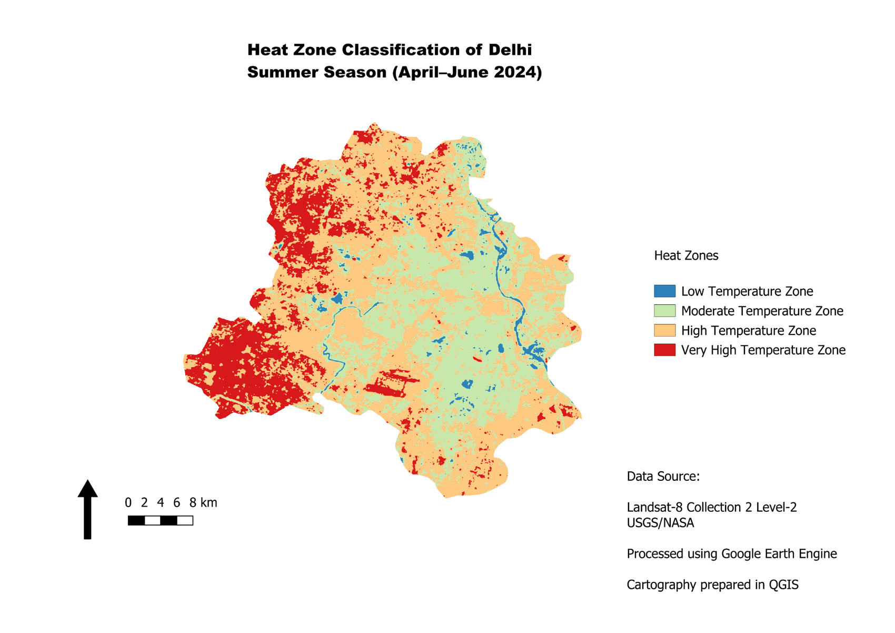
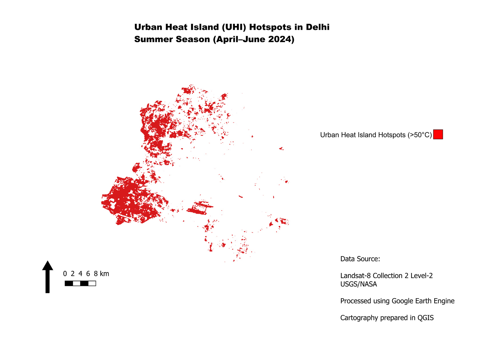
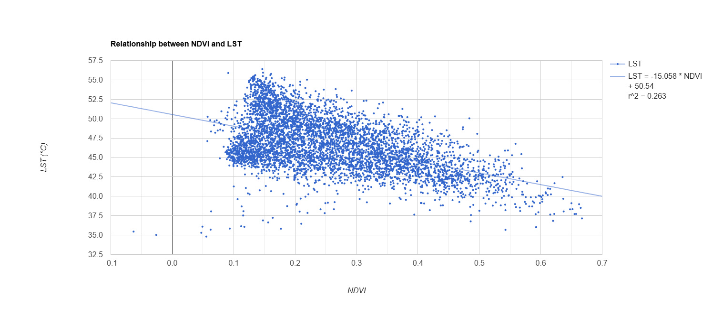
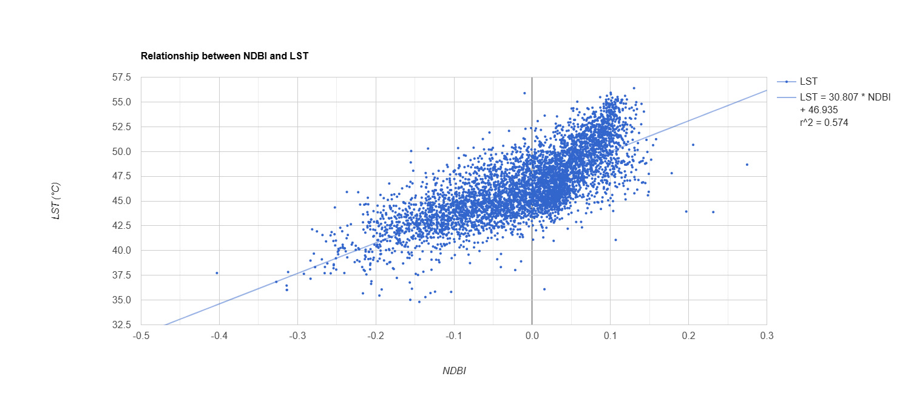

MANIPAL UNIVERSITY JAIPUR
School of Computer Science & Engineering
Department of Artificial Intelligence and Machine Learning
Industrial Training Report
A report on two geospatial analysis projects
Project 1. Drought Severity Assessment using Multi-temporal Vegetation Condition Index from Satellite Data
Project 2. Urban Heat Island Mapping using Land Surface Temperature, Built-up Density, and GIS Analysis
Submitted by
Nancy Verma
University Registration No. 23FE10CAI00241
Training / Internship ID 484756
B.Tech, Artificial Intelligence and Machine Learning
Under the supervision of Miss Alisha Sinha
India Space Academy
Department of Space Education, India Space Week
Submitted in partial fulfilment of the requirements for the B.Tech programme
Manipal University Jaipur, Rajasthan, India – 303007
October 2026
This is to certify that Nancy Verma (University Registration No. 23FE10CAI00241, Training / Internship ID 484756) has prepared this industrial training report on two projects completed during the Summer Training Program in Space Science Technology, titled “Remote Sensing and GIS Using Python.”
The first project assesses drought severity in Jalna District, Maharashtra, with the Vegetation Condition Index. The second project maps summer land surface temperature and urban heat island hotspots in the National Capital Territory of Delhi. The report is submitted in partial fulfilment of the requirements of the Bachelor of Technology programme at Manipal University Jaipur.
The methods, figures and area figures in this report are taken from the two project reports and from the map sheets prepared for those projects. Dates, signatures and the official seal are left blank for the supervisor and the department to complete.
Industry / Training Supervisor: Miss Alisha Sinha
Organization: India Space Academy, Department of Space Education, India Space Week
Supervisor signature: ______________________________
Date: ________________________ Seal: ________________________
I hereby declare that this industrial training report, titled “Remote Sensing and GIS Using Python: Drought Severity Assessment and Urban Heat Island Mapping,” is my compilation of the two project reports prepared during the Summer Training Program in Space Science Technology.
The report presents the study areas, datasets, methods, maps and results of those projects. I have not filled in official dates, signatures or approval details that were not given in the project material. Those lines are left blank so that they can be signed when the report is submitted.
Student signature: ______________________________
Name: Nancy Verma
University Registration No. 23FE10CAI00241
Training / Internship ID: 484756
Date: ______________________________
I am grateful to Miss Alisha Sinha, my training supervisor, for her guidance during the Summer Training Program in Space Science Technology. The two projects gave me a chance to use satellite data, Google Earth Engine and QGIS on a drought problem and on an urban heat problem.
I thank India Space Academy, Department of Space Education, India Space Week, for the training. I also thank Manipal University Jaipur and the School of Computer Science & Engineering, Department of Artificial Intelligence and Machine Learning, for the academic setting of this report.
The maps use data and tools named in the project reports: Google Earth Engine, MODIS MOD13Q1, Landsat-8 Collection 2 Level-2, USGS EarthExplorer, FAO GAUL administrative boundaries, OpenStreetMap and QGIS 3.40.
Nancy Verma
University Registration No. 23FE10CAI00241
This report brings together two geospatial projects from the training “Remote Sensing and GIS Using Python.” Project 1 looks at vegetation stress in Jalna District, Maharashtra, for 2023. Project 2 looks at summer land surface temperature in the National Capital Territory of Delhi for April–June 2024.
For Jalna, MODIS MOD13Q1 Version 6.1 NDVI at 250 m was processed in Google Earth Engine. Minimum and maximum NDVI from 2015–2023 and the 2023 mean NDVI were used to calculate the Vegetation Condition Index, VCI = (NDVI2023 − NDVImin) / (NDVImax − NDVImin). The district mean VCI is 0.488. The classified areas are 8.55 km² extreme drought, 652.14 km² moderate drought, 6,821.66 km² mild drought and 296.53 km² healthy vegetation. Those four classes sum to 7,778.88 km². Mild drought is 87.69% of that classified area. The maps were laid out in QGIS 3.40.
For Delhi, Landsat-8 Collection 2 Level-2 images from April–June 2024 with cloud cover below 10% were used at 30 m. NDVI, NDBI and land surface temperature were calculated in Google Earth Engine. LST runs from 33.10°C to 57.71°C, with a mean of 46.66°C and a standard deviation of 3.36°C. The four heat zones sum to 1,502.20 km². The zone above 50°C covers 259.16 km², which is 17.25% of that total. The scatter plots give LST = −15.058 × NDVI + 50.54 (r² = 0.263) and LST = 30.807 × NDBI + 46.935 (r² = 0.574).
The report follows the usual training-report order: certificate, declaration, acknowledgement, abstract, contents, lists of tables and figures, then the chapters, references and a short appendix. The figures are placed in the chapter that discusses them. Signature lines are blank.
| Certificate | 2 |
| Declaration | 3 |
| Acknowledgement | 4 |
| Abstract | 5 |
| Contents | 6 |
| List of tables | 7 |
| List of figures | 8 |
| Chapter 1 Introduction | 9 |
| 1.1 Background and motivation | 9 |
| 1.2 Objectives | 9 |
| 1.3 Scope of the work | 9 |
| 1.4 Organisation of the report | 9 |
| Chapter 2 Background and technologies | 10 |
| 2.1 Remote sensing and GIS | 10 |
| 2.2 NDVI and the Vegetation Condition Index | 10 |
| 2.3 NDBI and land surface temperature | 10 |
| 2.4 Tools and datasets | 11 |
| Chapter 3 Project 1 — Drought severity assessment | 12 |
| 3.1 Study area | 12 |
| 3.2 Data used | 12 |
| 3.3 Methodology | 12 |
| 3.4 Results and discussion | 13 |
| 3.5 Limitations | 16 |
| Chapter 4 Project 2 — Urban heat island mapping | 17 |
| 4.1 Study area | 17 |
| 4.2 Data used | 17 |
| 4.3 Methodology | 18 |
| 4.4 Results and discussion | 19 |
| 4.5 Limitations | 24 |
| Chapter 5 Comparison and recommendations | 25 |
| 5.1 Comparison of the two projects | 25 |
| 5.2 What the two projects have in common | 25 |
| 5.3 Recommendations for the drought work | 25 |
| 5.4 Recommendations for the heat work | 26 |
| 5.5 Keeping the work reproducible | 26 |
| Chapter 6 Conclusion and future scope | 27 |
| 6.1 Conclusion | 27 |
| 6.2 Future scope | 27 |
| References | 28 |
| Appendix A Abbreviations | 30 |
| Appendix B Submission checklist | 31 |
| Table 1. Datasets and software for the Jalna drought assessment | 12 |
| Table 2. VCI drought classes used for Jalna | 13 |
| Table 3. Drought area statistics for Jalna District, 2023 | 15 |
| Table 4. Datasets and software for the Delhi heat assessment | 18 |
| Table 5. LST heat-zone classes used for Delhi | 19 |
| Table 6. Land surface temperature statistics for Delhi | 19 |
| Table 7. Area of heat zones in Delhi | 21 |
| Table 8. Urban heat island hotspot statistics | 22 |
| Table 9. Comparison of the two projects | 25 |
| Figure 1. Workflow for the Jalna drought assessment | 13 |
| Figure 2. NDVI of Jalna District, 2023 | 14 |
| Figure 3. Drought severity of Jalna District, 2023 | 15 |
| Figure 4. Study area of the National Capital Territory of Delhi | 17 |
| Figure 5. Workflow for the Delhi urban heat island assessment | 18 |
| Figure 6. Land surface temperature of Delhi, April–June 2024 | 20 |
| Figure 7. Heat-zone classification of Delhi | 21 |
| Figure 8. Urban heat island hotspots in Delhi | 22 |
| Figure 9. Relationship between NDVI and LST | 23 |
| Figure 10. Relationship between NDBI and LST | 23 |
A separate location map of Jalna and a separate VCI map are named in the project contents. Those two sheets were not in the map set used for this report, so they are not given figure numbers here. The Jalna boundary is the one drawn on Figures 2 and 3. The VCI classes are the drought map in Figure 3.
Satellite images cover a whole district in one view, and they can be repeated from year to year. Geographic information systems then turn those images into maps with a boundary, a legend and an area table. That combination is what both training projects use.
The first project is about Jalna District in the Marathwada region of Maharashtra. Farming there depends a lot on rainfall, and the crops named in the project are cotton, soybean, maize, sorghum and pulses. A vegetation index cannot replace a rainfall record, but it can show where the vegetation in a given year sits relative to its own recent past.
The second project is about Delhi. The city is dense, the summers are very hot, and green cover is uneven. Land surface temperature from a thermal satellite band shows the surface pattern. It is not the same number as the air temperature a person feels, but it is a clear way to see which parts of the city surface are hottest.
Project 1 sets out to assess vegetation condition and drought severity in Jalna District. The practical aims are to build a 2015–2023 NDVI reference, compute VCI for 2023, classify that raster into four drought classes, estimate the area of each class, and prepare the maps in QGIS.
Project 2 sets out to map the summer urban heat pattern of Delhi. The practical aims are to make a cloud-screened Landsat-8 composite for April–June 2024, calculate NDVI, NDBI and LST, classify four heat zones, mark pixels above 50°C as hotspots, estimate their area, and check how LST lines up with NDVI and NDBI.
The work covers selection of the administrative boundary, selection of the satellite product, calculation of the indices in Google Earth Engine, classification, area statistics, and map layout in QGIS 3.40. It does not include a field survey. No ground thermometer readings or crop-cutting measurements are reported, so the maps stay as satellite indicators.
Chapter 2 explains NDVI, VCI, NDBI, LST and the software. Chapter 3 is the Jalna drought project, with the workflow, the NDVI map and the drought map placed in that chapter. Chapter 4 is the Delhi heat project, with the study-area map, the workflow, the temperature maps and the two scatter plots placed next to the results they show. Chapter 5 compares the projects and lists recommendations. Chapter 6 closes the report. The references and a short appendix follow.
A satellite sensor records reflected or emitted energy in separate bands. Vegetation reflects near-infrared strongly and red less so. Built-up surfaces often behave differently in the short-wave infrared. A thermal band records energy the surface emits, which is then scaled to a temperature.
In both projects the images were processed in Google Earth Engine and clipped to an FAO GAUL administrative boundary. The layouts, legends, scale bars and north arrows were prepared in QGIS 3.40. The Delhi study-area map also uses an OpenStreetMap base.
The Normalized Difference Vegetation Index is a greenness indicator. It is not a yield measurement and it is not a direct reading of soil moisture.
NDVI = (NIR − Red) / (NIR + Red)
Higher NDVI usually means denser or more vigorous vegetation. Lower values are common over bare soil, settlement and some water. In the drought project the NDVI values come from the MODIS product. In the Delhi project they are calculated from Landsat-8 Band 5 (NIR) and Band 4 (red).
The Vegetation Condition Index compares the current NDVI with the historical minimum and maximum at the same place. The project uses
VCI = (NDVI2023 − NDVImin) / (NDVImax − NDVImin)
NDVI2023 is the mean NDVI for 2023. NDVImin and NDVImax are the minimum and maximum over 2015–2023. A low VCI means the current vegetation is close to the worst value in that record. A high VCI means it is close to the best value. Kogan’s index is widely used for this kind of comparison, and the drought project follows that idea with the class breaks in Table 2 [2], [5].
The Normalized Difference Built-up Index is used as an indicator of built-up or impervious cover. The Delhi project calculates it from Landsat-8 Band 6 (SWIR) and Band 5 (NIR) [10].
NDBI = (SWIR − NIR) / (SWIR + NIR)
Positive NDBI values are more common over built-up surfaces. Negative values are more common over vegetation and water. Like NDVI, NDBI is an index, not a land-use map.
Land surface temperature is taken from the Landsat-8 Collection 2 Level-2 surface temperature band ST_B10. The project converts it to degrees Celsius with the scale and offset written in the project report:
LST (°C) = (ST_B10 × 0.00341802 + 149.0) − 273.15
Studies over Delhi have used Landsat surface temperature in the same general way, to compare hot built-up surfaces with cooler river and vegetation corridors [6], [7], [11].
Google Earth Engine held the image collections, the boundary clip, the index maths and the area counts. QGIS 3.40 was used after export, for symbology and the final layout. USGS EarthExplorer is the public source named for the satellite products [4], [15]. The FAO GAUL layer supplied the district and NCT boundaries. The same tools appear again in Tables 1 and 4, split by project, because the satellite product is not the same.
The project title is “Drought Severity Assessment using Multi-temporal Vegetation Condition Index from Satellite Data.” The district is Jalna, in Marathwada, Maharashtra. The project report places it between 19.27° N and 20.64° N and between 75.59° E and 76.53° E. The area given there is about 7,800 km². Elevation is described as low, about 350 m to 735 m above mean sea level. The climate note in the project is a hot semi-arid summer and monsoon rainfall that is often normal to below average. Agriculture is the main livelihood, so a weak vegetation year matters for cotton, soybean, maize, sorghum and pulses [3].
The FAO GAUL boundary of Jalna was the area of interest inside Google Earth Engine. Every raster was clipped to that boundary. A separate location map of the district is listed in the project contents, but that sheet was not among the maps supplied for this report. The outline of the district is the one drawn on the NDVI map and on the drought map later in this chapter.
The vegetation time series is MODIS MOD13Q1 Version 6.1, a 16-day NDVI composite at 250 m. The years 2015–2023 supply the minimum and maximum NDVI. The mean NDVI of 2023 is the current condition. MODIS NDVI in this product is stored as a scaled integer, so the project multiplies by 0.0001 before the index is used.
Table 1. Datasets and software for the Jalna drought assessment.
| Dataset or software | Type | Role in the project |
|---|---|---|
| MODIS MOD13Q1 Version 6.1 | 250 m, 16-day NDVI | 2015–2023 minimum and maximum, and 2023 mean NDVI |
| FAO GAUL boundary | Vector | Area of interest and clip |
| Google Earth Engine | Cloud platform | Scale, clip, VCI, classification, area |
| QGIS 3.40 | Desktop GIS | Symbology and map layout |
| USGS EarthExplorer | Web portal | Reference source named for the satellite data |
Figure 1 is the workflow drawn for this project. The top row is data acquisition: Jalna as the study area, the FAO GAUL boundary, and NDVI statistics for 2015–2023. The green row is Google Earth Engine: NDVI from (NIR − Red) / (NIR + Red), the VCI calculation, and the drought severity classification. The next row is QGIS 3.40: import, base layers, symbology, layout and export. The bottom row lists the intended outputs: a study-area map, an NDVI map, a VCI map and a drought severity map. The drawn diagram goes from step 3 to step 5 and does not label a step 4. I have described the blocks that are actually on the figure.

Inside Earth Engine the collection was filtered to 2015–2023 and clipped to the district. After the 0.0001 scale factor, the long-term minimum and maximum images and the 2023 mean image were built. VCI was then classified with the four breaks in Table 2. Area was the count of pixels in each class, converted to square kilometres. The thematic rasters were exported for layout in QGIS 3.40.
Table 2. VCI drought classes used for Jalna.
| VCI range | Class on the map |
|---|---|
| 0.00 – 0.20 | Extreme drought |
| 0.20 – 0.40 | Moderate drought |
| 0.40 – 0.60 | Mild drought |
| 0.60 – 1.00 | Normal / healthy vegetation |
These breaks are the ones used in the project. They describe relative vegetation condition. They are not a direct measurement of rainfall deficit or of crop loss [1], [2].
Figure 2 is the 2023 NDVI map of Jalna. Most of the district falls in the moderate vegetation class. Dense vegetation is in smaller patches, including a southern belt. A small blue patch on the eastern side is classed as water. The project text says the lowest NDVI values are generally over the settled parts of the district. That reading fits the map: the pale and light tones are local, and the orange moderate class covers most of the farmland.

The credit line printed on this layout names Sentinel-2 Level-2A MSI, processed in Google Earth Engine for 2023. The method chapter of the project, and the drought map in Figure 3, name MODIS MOD13Q1 Version 6.1. Both credits are left as they are printed. This report does not treat them as the same sensor. The class pattern above is what the sheet shows. The VCI numbers in Table 3 come from the MODIS method in the project report.
The mean VCI for the district is 0.488. On the scale in Table 2, 0.488 sits inside the mild drought class (0.40–0.60). The project reads this as moderate vegetation stress overall in 2023: better than the worst years in the 2015–2023 record, and short of the best years. A separate VCI colour plate was not in the map set, so the spatial result is shown after classification, as Figure 3.
Figure 3 is dominated by the mild drought class. Moderate drought appears as scattered orange patches, more of them in the north and in a few central pockets. Healthy vegetation is the blue speckle. Extreme drought is a very small red patch on the south-eastern edge. That picture matches the area table: one class covers most of the district, and the extreme class is easy to miss if the areas are not written down.

Table 3 copies the class areas from the project and adds the share of the classified total. The four classes sum to 7,778.88 km², which is close to the district area of about 7,800 km² given in the study-area text. Mild drought is 6,821.66 km², or 87.69% of the classified area. That is the figure used here. Moderate drought is 652.14 km² (8.38%), healthy vegetation is 296.53 km² (3.81%), and extreme drought is 8.55 km² (0.11%).
Table 3. Drought area statistics for Jalna District, 2023.
| Class | Area (km²) | Share of 7,778.88 km² |
|---|---|---|
| Extreme drought (VCI 0.00–0.20) | 8.55 | 0.11% |
| Moderate drought (VCI 0.20–0.40) | 652.14 | 8.38% |
| Mild drought (VCI 0.40–0.60) | 6,821.66 | 87.69% |
| Normal / healthy vegetation (VCI 0.60–1.00) | 296.53 | 3.81% |
| Classified total | 7,778.88 | 100% |
The percentages are rounded to two decimal places, so the four shares can differ from 100 by a rounding of 0.01. The square-kilometre total is the sum of the four reported areas, not a new measurement.
A small extreme class does not mean the district had an easy year. The mean VCI is still only 0.488, and mild drought covers almost nine-tenths of the classified area. For farm decisions this map would need rainfall, soil moisture and the crop calendar next to it [1], [5]. What it does show, on its own, is that 2023 vegetation was widely below the better years in the nine-year record, without a large area at the historical minimum.
MOD13Q1 is a 250 m, 16-day composite. One pixel can mix fields, settlements and bare ground. The VCI answer also depends on the 2015–2023 window and on the four class breaks. A different window or a different break would move the areas.
The project does not report a field check, and it does not compare VCI with a rainfall index such as the Standardized Precipitation Index. The area figures are the project’s pixel counts. They were not recalculated from raw imagery for this report. The NDVI layout credits Sentinel-2, while the method and Figure 3 credit MODIS. Until those two credits are reconciled in the original files, Figure 2 should be read as the printed NDVI sheet, and Table 3 should be read as the MODIS VCI table.
The project title is “Urban Heat Island Mapping using Land Surface Temperature, Built-up Density, and GIS Analysis,” for the National Capital Territory of Delhi. Delhi is used because land cover has changed quickly and summers are extreme. The project places the territory near 28°24′ N and 76°50′ E. Haryana lies to the north, west and south, and Uttar Pradesh to the east. The Yamuna drains a large part of the city and is one of the cooler corridors on the temperature maps [7], [12].
The descriptive text gives the NCT area as about 1,483 km². The heat-zone areas in Table 7 add up to 1,502.20 km², and Table 8 uses that same total. Both numbers are kept. Shares in this chapter are calculated from 1,502.20 km², because that is the sum of the classified zones.
Figure 4 shows the FAO GAUL boundary used as the area of interest, drawn on an OpenStreetMap base in QGIS 3.40. The red line includes the NCT and is the clip for every Landsat raster in the project. The scale bar runs to 40 km.

The images are Landsat-8 Collection 2 Level-2 for April–June 2024, kept only where cloud cover is below 10%. Band 4 (red) and Band 5 (NIR) make NDVI. Band 6 (SWIR) and Band 5 make NDBI. ST_B10 is the surface temperature band. A median composite reduces the remaining cloud. The pixel size used for the maps is 30 m.
Table 4. Datasets and software for the Delhi heat assessment.
| Dataset or software | Type | Role in the project |
|---|---|---|
| Landsat-8 Collection 2 Level-2 | 30 m raster | April–June 2024, cloud cover below 10% |
| Bands 4, 5, 6 and ST_B10 | Spectral and thermal | NDVI, NDBI and LST |
| FAO GAUL boundary | Vector | Area of interest and clip |
| Google Earth Engine | Cloud platform | Filter, median composite, indices, classes, area |
| QGIS 3.40 | Desktop GIS | Symbology, OpenStreetMap base, layout |
| USGS EarthExplorer | Web portal | Source named for the Landsat scenes [15] |
Figure 5 is the workflow for the heat project. Data acquisition is the Delhi study area, the FAO GAUL boundary, and Landsat-8 Collection 2 Level-2 imagery for April–June 2024 with cloud cover below 10%. Google Earth Engine then calculates NDVI, NDBI and LST. LST uses ST_B10 and the conversion from kelvin to Celsius written on the diagram. The analysis row classifies four heat zones, marks hotspots where LST is above 50°C, calculates area, and exports GeoTIFF layers and tables. The QGIS row matches the Jalna layout steps: import, base layers, symbology, layout and export. The result row is the LST map, the heat-zone map, the hotspot map, and the NDVI–LST and NDBI–LST scatter plots. Those five outputs are Figures 6 to 10.

The processing order inside Earth Engine was: load the Delhi boundary, filter the summer images, build a median composite, clip to the boundary, calculate NDBI and NDVI, convert ST_B10 to LST, record minimum, maximum, mean and standard deviation, classify four heat zones, flag LST above 50°C, and export the rasters and the tables.
Table 5. LST heat-zone classes used for Delhi.
| Class | LST | Name on the map |
|---|---|---|
| 1 | below 40°C | Low temperature zone |
| 2 | 40–45°C | Moderate temperature zone |
| 3 | 45–50°C | High temperature zone |
| 4 | above 50°C | Very high temperature zone (hotspot) |
The 50°C cut is the project’s rule for a hotspot. It is not a universal definition of an urban heat island [8], [14]. Four-class thermal maps of this kind are also used in other city studies [9], [16]. The continuous LST map in Figure 6 uses a finer legend than these four classes. Both are kept: Figure 6 shows the range, and Figure 7 shows the four zones that were measured.
Table 6 is the LST summary for April–June 2024. The minimum is 33.10°C, the maximum is 57.71°C, the mean is 46.66°C and the standard deviation is 3.36°C. The mean sits in the high zone of Table 5, which is why that zone is the largest area in Table 7.
Table 6. Land surface temperature statistics for Delhi, April–June 2024.
| Statistic | Value (°C) |
|---|---|
| Minimum | 33.10 |
| Maximum | 57.71 |
| Mean | 46.66 |
| Standard deviation | 3.36 |
Figure 6 shows the same season as a map. The cooler colours follow the Yamuna and some park and woodland patches. The hotter reds are extensive in the west, the north-west and the south-west, where the project text points to dense construction and little vegetation. The legend on this sheet is in six bins, from 33–37°C up to above 52°C, so it is finer than the four zones in Table 5. The Yamuna still reads as a cool thread through the centre, which agrees with earlier Delhi LST maps that pick out the river and the greener tracts [6], [7], [13].

Figure 7 collapses the temperature raster into the four classes of Table 5. Pale green, the moderate zone, covers much of the centre and the east. Orange, the high zone, is widespread. Red, the very high zone, is concentrated in the west and the south-west, with smaller patches elsewhere. Blue, the low zone, is limited to the river, a few water bodies and small green pockets.

Table 7 gives the area of each zone. The high zone is the largest, at 747.90 km² (49.79%). The moderate zone is 466.70 km² (31.07%). The very high zone is 259.16 km² (17.25%). The low zone is only 28.44 km² (1.89%). The four areas sum to 1,502.20 km².
Table 7. Area of heat zones in Delhi.
| Heat zone | Area (km²) | Share of 1,502.20 km² |
|---|---|---|
| Low (below 40°C) | 28.44 | 1.89% |
| Moderate (40–45°C) | 466.70 | 31.07% |
| High (45–50°C) | 747.90 | 49.79% |
| Very high (above 50°C) | 259.16 | 17.25% |
| Classified total | 1,502.20 | 100% |
Figure 8 keeps only the very high class. The red patches are the pixels above 50°C. They cluster in the west and the south-west, with a broken band toward the north and a few spots in the south-east. The rest of the territory is left blank so that the hotspot extent is easy to see. Cooler surfaces along the Yamuna, in parks and in woodland are the gaps inside and beside those patches.

Table 8. Urban heat island hotspot statistics.
| Item | Value |
|---|---|
| Classified study area (sum of Table 7) | 1,502.20 km² |
| Area described in the study-area text | about 1,483 km² |
| Hotspot area (LST above 50°C) | 259.16 km² |
| Hotspot share of 1,502.20 km² | 17.25% |
Seventeen percent is not most of the city, but it is the hottest fifth of the classified surface. The project treats these patches as the first places to look at when planning shade, trees or cool roofs. They are surface-temperature patches. They become a heat-risk map only after people, housing and exposure are added [12].
Figure 9 plots LST against NDVI for the summer composite. The cloud slopes downward. The line printed on the plot is LST = −15.058 × NDVI + 50.54, with r² = 0.263. Vegetation greenness and surface temperature move in opposite directions, but the scatter is wide: at an NDVI of about 0.2, LST still ranges from the high 30s to about 55°C. The fit explains a modest share of the variation. It supports the map reading that greener pixels are generally cooler. It does not, by itself, measure how many degrees a new park would remove [8], [11], [13].

Figure 10 plots LST against NDBI. The cloud slopes upward. The line printed on the plot is LST = 30.807 × NDBI + 46.935, with r² = 0.574. The built-up index lines up with temperature more tightly than NDVI does in these two plots. Higher NDBI, toward the built-up side of the index, sits with higher LST. Lower NDBI sits with cooler pixels. The relationship is still a description of this composite, not a proof that building cover is the only cause [10], [11], [13].

Read together, the two plots say the same thing as the maps. Where the vegetation index is higher, the surface tends to be cooler. Where the built-up index is higher, the surface tends to be hotter. The NDBI fit is the stronger of the two in this summer composite.
LST is the temperature of the surface seen by the satellite. It is not air temperature at 2 m, and it is not a measure of how hot a street feels to a person. The result depends on the April–June 2024 window, the 10% cloud rule, the median composite and the ST_B10 scale. A night-time image, or another summer, could shift the hotspot map.
The threshold of 50°C is a choice of this project. Pixels at 49°C fall in the high zone even if they are only one degree cooler. The project does not report a field thermometer check or a formal error budget. The 1,483 km² figure in the text and the 1,502.20 km² classified total should be reconciled before either number is quoted on its own. The scatter plots do not name the sample size, so r² is reported only as the value printed on each figure.
Both projects clip a satellite raster to an FAO GAUL boundary, do the calculation in Google Earth Engine, and draw the map in QGIS 3.40. The questions are different. Jalna asks where 2023 vegetation sits against its own 2015–2023 record. Delhi asks where the surface was hottest in one summer, and whether that pattern follows vegetation and built-up indices.
Table 9. Comparison of the two projects.
| Item | Jalna drought assessment | Delhi heat assessment |
|---|---|---|
| Question | Where is vegetation stressed relative to 2015–2023? | Where is the summer surface hottest? |
| Main data | MODIS MOD13Q1 Version 6.1 | Landsat-8 Collection 2 Level-2 |
| Resolution stated | 250 m | 30 m |
| Time | NDVI, 2015–2023; current year 2023 | April–June 2024 |
| Indices | NDVI and VCI | NDVI, NDBI and LST |
| Classes | Four VCI drought classes | Four LST zones; hotspot above 50°C |
| Headline numbers | Mean VCI 0.488; mild drought 6,821.66 km² (87.69%) | Mean LST 46.66°C; hotspot 259.16 km² (17.25%) |
| Use | Drought monitoring and farm planning | Heat screening and urban planning |
Cloud processing meant the full time series did not have to be downloaded and stacked on a laptop. Clipping to the administrative boundary kept the area tables inside the study area. QGIS made the legends and scale bars that a table cannot show. Both projects also leave a clear trail of the product name, the years, the formula and the class breaks, which is what another student would need to repeat the maps.
The shared limit is also the same. An index map is a screening layer. Jalna’s mild-drought class still needs a rainfall check before anyone treats it as a failed crop. Delhi’s red hotspot still needs an air-temperature or health layer before anyone treats it as a risk map.
The VCI map should be read next to rainfall anomaly, soil moisture and the local crop calendar, so that a low NDVI caused by harvest or bare soil is not called drought. The same seasonal window should be used every year if 2023 is going to be compared with later years. A few sites from the extreme and healthy classes should be checked on the ground, or against district crop reports, before the map is used to rank villages. The class breaks and the pixel-area method should stay written beside Table 3. The Sentinel-2 credit on the NDVI layout and the MODIS credit on the drought layout should be corrected in the source project so that a later reader does not mix the two sensors.
The red patches in Figure 8 are a sensible shortlist for shade, street trees and cool roofs, after a site visit. They should not be published as a health map until population and housing are added. LST should stay labelled as surface temperature. One summer is not a trend, so the same cloud rule and the same 50°C cut should be run for other years before a neighbourhood is called a permanent hotspot. The text area of about 1,483 km² and the classified total of 1,502.20 km² should be tied to one boundary file before the 17.25% share is quoted outside this report. Sample size and the pixel filter used for Figures 9 and 10 should be written on the plots the next time they are exported.
A repeat of either project needs the collection identifier, the date filter, the cloud threshold, the scale factor, the boundary version, the projection, the class breaks and the export settings. The Earth Engine script and the QGIS project file belong with the report when the department asks for annexures. This compilation records the settings that are written in the project reports and on the map sheets. It does not replace those scripts.
The Jalna project placed 2023 NDVI against the 2015–2023 minimum and maximum and classified the Vegetation Condition Index. The district mean VCI is 0.488. Of the 7,778.88 km² assigned to the four classes, 6,821.66 km² (87.69%) is mild drought, 652.14 km² is moderate drought, 296.53 km² is healthy vegetation, and 8.55 km² is extreme drought. Stress was widespread. The extreme class was small.
The Delhi project mapped April–June 2024 land surface temperature from Landsat-8. LST ranges from 33.10°C to 57.71°C, with a mean of 46.66°C. Of the 1,502.20 km² in the four heat zones, 747.90 km² is in the high zone and 259.16 km² (17.25%) is above 50°C. The hotter surfaces lie toward the west and south-west. Cooler surfaces follow the Yamuna and the greener patches. NDVI falls as LST rises (r² = 0.263 on the printed fit). NDBI rises with LST (r² = 0.574 on the printed fit).
Both results are ready to use as screening maps. They are not, on the evidence in the project reports, validated field maps. The formulas, the class breaks and the two area totals are the parts a reader should keep beside the figures.
The same Earth Engine steps can be run on a schedule so that Jalna VCI and Delhi summer LST are updated without rebuilding the layout from scratch. Rainfall, soil moisture and a land-cover map would make the drought class easier to trust. A night-time thermal image and a population layer would make the Delhi hotspot more useful for planning. Multi-year repeats would show whether 2023 and the 2024 summer were typical. A small set of alternative class breaks would show how sensitive the area tables are. Any of that work should keep the metadata list in Section 5.5 with the new maps.
The training itself stops at the two projects documented here. The extensions above are the next measurements the present maps point to. They were not carried out in this report.
The list follows the references given in the two project reports. Where a project report left a citation incomplete, the gap is stated instead of being filled in from outside the report.
| Abbreviation | Meaning |
|---|---|
| AOI | Area of interest |
| FAO | Food and Agriculture Organization |
| GAUL | Global Administrative Unit Layers |
| GEE | Google Earth Engine |
| GIS | Geographic information system |
| LST | Land surface temperature |
| MODIS | Moderate Resolution Imaging Spectroradiometer |
| NCT | National Capital Territory |
| NDBI | Normalized Difference Built-up Index |
| NDVI | Normalized Difference Vegetation Index |
| NIR | Near-infrared |
| SWIR | Short-wave infrared |
| UHI | Urban heat island |
| USGS | United States Geological Survey |
| VCI | Vegetation Condition Index |
The items below are for the student and the department to complete at submission. Nothing in this list has been marked done, and no signature has been added.
| Item | Status |
|---|---|
| Confirm the training dates and the official training certificate. | |
| Obtain the supervisor, faculty and head-of-department signatures that the department requires. | |
| Check the cover wording against the current university template. | |
| Check the contents page numbers against the printed pages. | |
| Check reference [3] when the full Jalna land-use citation is available. | |
| Attach the Earth Engine script and the QGIS project if the department asks for them. |
Student signature: ______________________________
Supervisor signature: ______________________________
Date: ______________________________